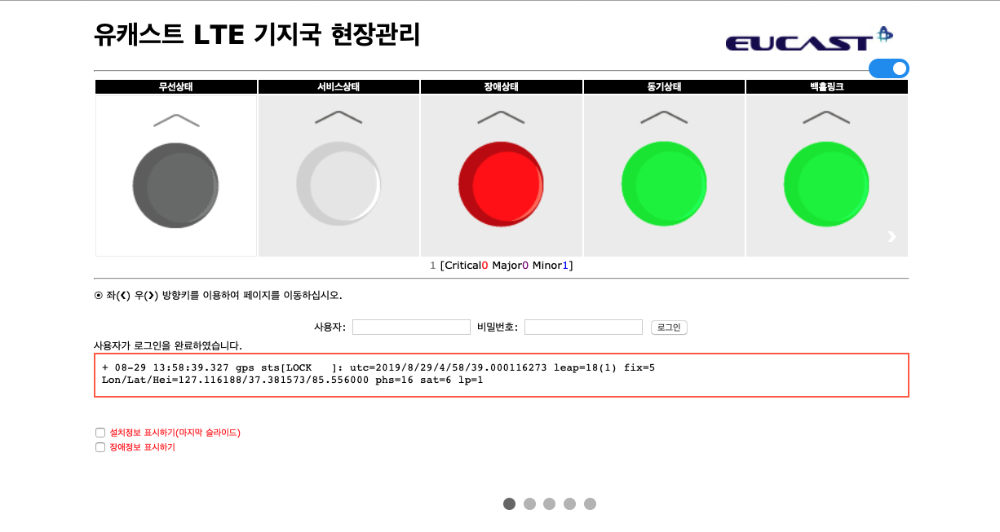
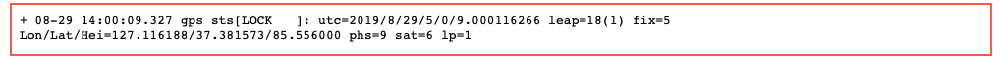

메인 화면

‣ 메인 화면에서는 전체적인 기지국의 상태를 확인하실 수 있습니다.
‣ 모든 기능을 사용하시려면 먼저 로그인을 하시기 바랍니다.
☺ 로그인를 하시려면 사용자와 비밀번호를 입력하고 로그인 버튼을 클릭하십시오.

☺ 로그인를 완료하면 아래와 같이 표시되며 좌우키로 다른 페이지로 자유로이 이동하실 수있습니다.

‣ 기지국의 전체상태는 상태바에 나타는 색깔로 된 아이콘으로 확인하실수 있습니다.
★ 무선상태
초록색 점등: 무선출력이 ON된 상태.
초록색 깜빡임: 무선출력을 방사하기 위하여 초기화 진행중인 상태.
초록색 점멸: 무선출력이 OFF된 상태.
★ 서비스상태
초록색 점등: 서비스 상태가 ON된 상태.
초록색 점멸: 서비스 상태가 OFF된 상태.
★ 장애상태
초록색 점등: 장애가 발생하지 않음.
빨간색 점등: 장애가 발생함.
★ 동기상태
초록색 점등: GPS Lock 상태.
초록색 깜빡임: GPS 추적중인 상태.
초록색 점멸: GPS Unlock 상태.
GPS 상태는 GPS 상태바와에서 상세하게 확인하실 수 있습니다.

★ 백홀링크
초록색 점등: 백홀 링크상태, (IOPS운용시) Pulic망과 연결.
빨간색 점등: (IOPS운용시) Loca 망과 연결된 상태
‣ 페이지 하단을 부가정보를 위한 체크박스가 있습니다.
★ 기지국 설치를 위한 파라미터창은 메인창에서 "설치정보 표시하기(마지막 슬라이드)" 체크박스를 체크하여야 이동하여 보실수 있습니다.
★ 장애발생시에 장애내역은 "장애정보 표시하기" 체크박스를 체크하시면 보실수 있습니다.